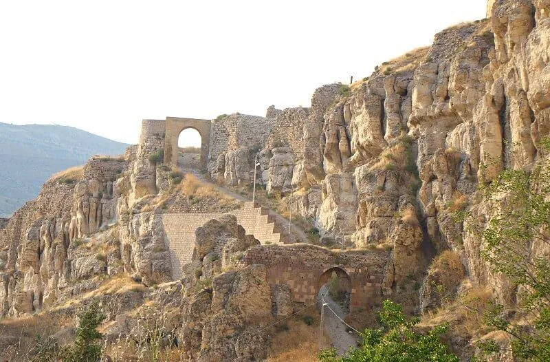

Erzincan’ın Kemah ilçesinde bulunan ve bulunduğu yerin adını taşıyan kale, şehrin tarihi yerlerinden biridir.Çok eski bir yerleşim yeri olan Kemah’ta bulunan kale, tarihte bir çok medeniyet görmüştür. İlçeye ayrı bir güzellik katan bu kale özellikle kara savaşlarında önemli bir savunma alanı olmuştur. Aynı zamanda Evliya Çelebi Seyahatname adlı kitabında kaleden bahsetmiştir.
